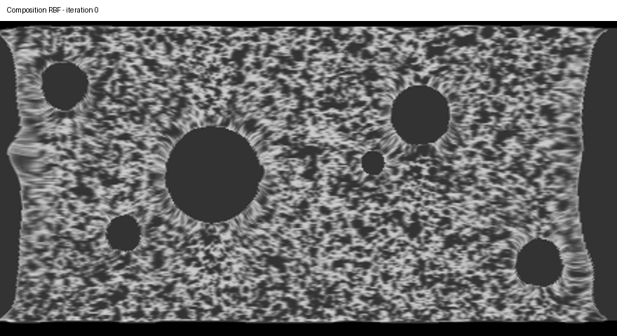

Essai invalide : conversion du tableau flottant corrigée avant les expériences de composition_v2. Aucun résultat résiduel exploitable ici.
RBF : fonctions de base radiale. À chaque itération : corrélation affine résiduelle sur GPU (processeur graphique), contrôle sur la cible originale, moments des trous remappés, ajustement RBF, puis composition Φnouveau(x) = Φancien(x + δu(x)). Les jacobiennes se multiplient dans ce même ordre. Les images affichées sont toutes échantillonnées une seule fois dans la cible originale.
Supports de 12 pixels, pas de 4 pixels ; seuil de corrélation 0,65 inchangé. Les pas 1, 1/2, 1/4 et 1/8 sont comparés sur un ensemble fixe de pixels matériels ; on refuse une augmentation des plis ou des sorties d’image. Aucun déplacement analytique n’est utilisé. Prototype de développement : calcul local GPU, ajustement et composition CPU.
Ces corrélations ne constituent pas une mesure d’erreur de déplacement. Le recouvrement des trous participe à l’ajustement. Les anciennes graines restent intactes. La couronne est définie par 1 ≤ r/r₀ < 1,25.
| Itération | Corrélation matière | Couronne | Recouvrement trous | Déterminants ≤0 | Matière hors image |
|---|---|---|---|---|---|
| 0 | 0.8304 | 0.6218 | 95.03% | 0 | 11 |
Tous les essais et valeurs brutes · image1_ref · image1_def_cor
